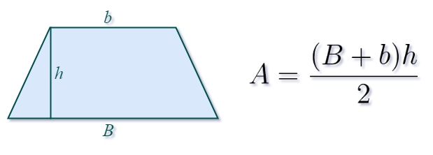

Trapézio
Um trapézio é uma forma geométrica 2D que é um quadrilátero com pelo menos um par de lados paralelos
Calcular área
A área de um trapézio pode ser calculada usando a seguinte fórmula:
Onde:
- B é o comprimento da base maior do trapézio.
- b é o comprimento da base menor do trapézio.
- h é a altura do trapézio, ou seja, a distância perpendicular entre as duas bases.
A fórmula funciona para qualquer trapézio, seja ele regular ou irregular, desde que as bases e a altura sejam conhecidas.
Vamos fazer um exemplo com um trapézio com base maior de 8 unidades, base menor de 4 unidades, e altura de 3 unidades.
Substituindo os valores na fórmula:
- Área do trapézio = (8 + 4) x 3 / 2
- Área do trapézio = 12 x 3 / 2
- Área do trapézio = 36 / 2
- Área do trapézio = 18
Resultado:
Voltar